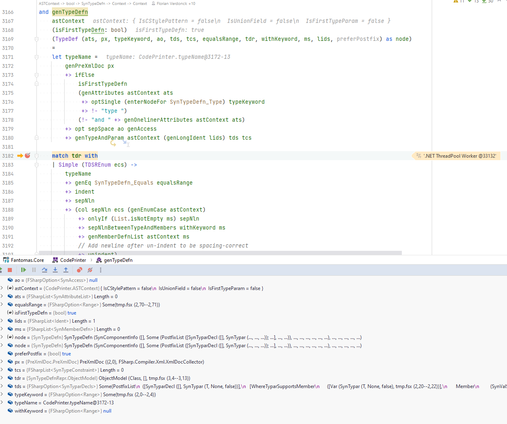

Fantomas.Core overview (2)
Once the Oak is populated with all the found trivia, we can traverse the Oak to capture all the WriterEvents.
We enter the module of CodePrinter and try and reconstruct the code based on the given configuration.
WriterEvents and WriterModel
In previous versions of Fantomas, Context had a TextWriter that was used to write the output.
This is a more advanced version of a StringBuilder and we wrote the formatted code directly to the buffer.
The key problem with this approach was that we couldn't easily revert code that was written to the buffer.
For example, if the formatted code was crossing the max_line_length, we couldn't easily revert the code and try an alternative.
That is why we first capture a collection of WriterEvents and then reconstruct the formatted code.
If the code is too long, we can drop the last events and try an alternative.
WriterModel
When we capture new events we also want to capture the current state of the result.
This happens in the WriterModel record. There we store the result of each event as if it were finalized.
By doing this, we can assert the result of the output. For example if our code is too long or not.
WriterEvents and WriterModel are very stable in the code base.
When solving a bug, you typically need to change the collected series of events by using a different helper function inside CodePrinter.
CodePrinter
In CodePrinter the syntax tree is being traversed with the help of various (partial) active patterns.
These active patterns are defined in SourceParser and typically are used to present the information we are interested in, in a different shape.
CodePrinter exposes one function genParsedInput.
val genFile: oak: Oak -> (Context -> Context)
This takes an Oak and it returns a function that takes a Context and returns a new Context.
We will eventually call this function with an initial Context. This initial Context will have our default config.
In this function, all events are captured and stored in the WriterEvents and WriterModel.
While we are traversing the syntax tree, we will compose the Context -> Context function based on the content.
Context.dump then eventually takes the Context and returns a string of formatted code.
This may seem a bit complicated, but you typically can see this as an implementation detail and can abstract this when working in CodePrinter.
Creating WriterEvents
There are various helper functions in CodePrinter that create WriterEvents.
In CodePrinter we will typically never construct a WriterEvent directly.
Instead we can use various helper functions that take the Context as parameter and return an updated Context with additional events.
Please take a moment to debug the unit tests in CodePrinterHelperFunctionsTests.fs.
This will give you a better understanding of how we capture events in CodePrinter.
Debugging CodePrinter
One thing that is a bit harder to grasp initially, is what is happening when you put a breakpoint in CodePrinter.fs.
In CodePrinter.fs we compose a format function that takes a Context and returns a Context.
We do this by traversing the syntax tree, and when you put a breakpoint in genTypeDefn for example:

we are still in the process of composing the format function.
The Context has not been going through our format function yet!
If we want to debug when the Context is traveling through the format function, we can easily, temporarily, insert an additional function to inspect the Context content:

The dumpAndContinue helper function can be used to inspect the Context.
Please remove all usages when submitting a PR 😸.